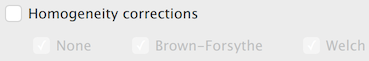
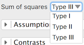
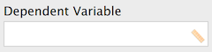
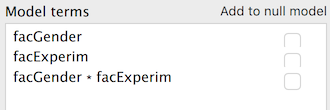
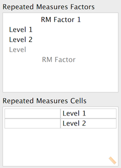
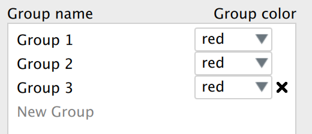
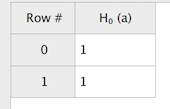
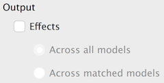
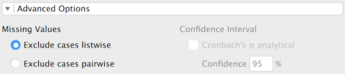
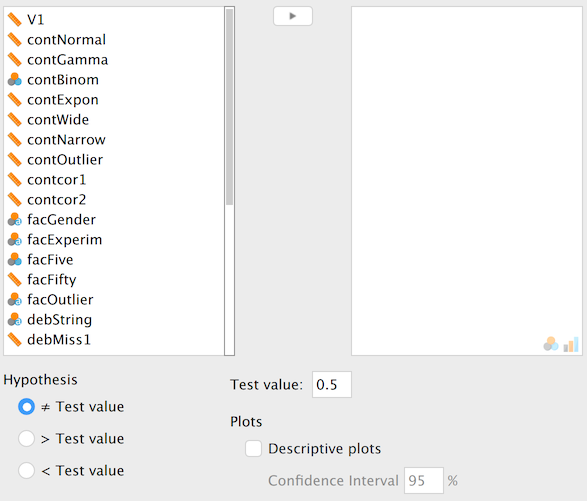

4 Designing the QML Interface
QML (Qt Modeling Language) defines the analysis options panel that users interact with. JASP provides standardised components (checkboxes, dropdowns, variable lists, etc.) that generate a uniform look and automatically communicate user choices to R.
Key QML paradigms:
- Containment — components can be nested; properties of inner components are hidden from outer ones
- Property binding — when a property is set via a JavaScript expression referencing another component, it updates automatically when that component changes
CheckBox { id: showCi; label: qsTr("Confidence interval") }
CIField { name: "ciLevel"; enabled: showCi.checked }Wrap all user-visible text in qsTr() for translation support. Use \uXXXX for non-Latin characters.
Follow the QML style guide for formatting conventions.
4.1 General input components
4.1.1 CheckBox
Toggle on/off. Nested components are automatically enabled/disabled.
| Property | Default | Description |
|---|---|---|
name |
— | Identifier used in R |
label |
— | User-visible text |
checked |
false |
Default state |
childrenOnSameRow |
false |
Place children horizontally |
columns |
1 |
Columns for nested components |
CheckBox
{
name: "homogeneityCorrections"
label: qsTr("Homogeneity corrections")
columns: 3
CheckBox { name: "homogeneityNone"; label: qsTr("None"); checked: true }
CheckBox { name: "homogeneityBrown"; label: qsTr("Brown-Forsythe"); checked: true }
CheckBox { name: "homogeneityWelch"; label: qsTr("Welch"); checked: true }
}
4.1.3 DropDown
DropDown
{
name: "method"
label: qsTr("Method")
values: [
{ label: qsTr("Pearson"), value: "pearson" },
{ label: qsTr("Spearman"), value: "spearman" }
]
}Key properties: source (populate from a variable list), addEmptyValue, startValue.

4.1.4 Numeric fields
| Component | Purpose | Key defaults |
|---|---|---|
DoubleField |
Decimal input | min: 0, decimals: 3 |
IntegerField |
Integer input | min: 0 |
PercentField |
Percentage | defaultValue: 50 |
CIField |
Confidence interval % | defaultValue: 95 |
DoubleField { name: "priorWidth"; label: qsTr("Prior width"); defaultValue: 0.5; max: 2 }
IntegerField { name: "nSamples"; label: qsTr("Samples"); defaultValue: 10000 }
CIField { name: "ciLevel"; label: qsTr("Confidence interval") }4.1.5 TextField and FormulaField
TextField accepts arbitrary text. FormulaField accepts R expressions that evaluate to numbers (e.g., 1/3, pi, sin(30)).
TextField { name: "labelY"; label: qsTr("Y-axis label"); fieldWidth: 200 }
FormulaField { name: "prior"; label: qsTr("Prior"); defaultValue: "1/3" }4.1.6 TextArea
Multi-line input; press Ctrl+Enter to apply. Set textType for syntax highlighting:
JASP.TextTypeLavaan— lavaan syntaxJASP.TextTypeRcode— R codeJASP.TextTypeJAGS— JAGS model
4.2 Variable specification components
4.2.1 AvailableVariablesList / AssignedVariablesList
The core drag-and-drop mechanism. Wrap in a VariablesForm:
VariablesForm
{
AvailableVariablesList { name: "allVariables" }
AssignedVariablesList
{
name: "dependent"
label: qsTr("Dependent Variable")
singleVariable: true
allowedColumns: ["scale"]
}
AssignedVariablesList
{
name: "fixedFactors"
label: qsTr("Fixed Factors")
allowedColumns: ["nominal", "ordinal"]
}
}
Key AssignedVariablesList properties:
| Property | Description |
|---|---|
singleVariable |
Only one variable allowed |
allowedColumns |
Restrict to ["scale"], ["nominal", "ordinal"], etc. |
listViewType |
JASP.Interaction for model terms, JASP.Layers for layers |
rowComponent |
Add per-variable controls (checkboxes, dropdowns) |
AssignedVariablesList
{
name: "modelTerms"
label: qsTr("Model Terms")
listViewType: JASP.Interaction
rowComponent: CheckBox { name: "isNuisance"; label: qsTr("Nuisance") }
}
4.2.2 FactorLevelList
For defining factor names and their levels (e.g., Repeated Measures ANOVA):
FactorLevelList
{
name: "repeatedMeasuresFactors"
label: qsTr("Repeated Measures Factors")
factorName: qsTr("RM Factor")
minLevels: 2
}
4.3 Complex components
4.3.1 ComponentsList
Dynamically add/remove sets of options (e.g., multiple models):
ComponentsList
{
name: "models"
label: qsTr("Models")
rowComponent: Group
{
TextField { name: "modelName"; label: qsTr("Name") }
TextArea { name: "syntax"; textType: JASP.TextTypeLavaan }
}
}4.3.2 TabView
Multiple tabs, each containing the same set of controls:
TabView
{
name: "models"
maximumItems: 9
newItemName: qsTr("Model 1")
content: TextArea { name: "syntax"; textType: JASP.TextTypeLavaan }
}4.3.3 InputListView / TableView
InputListView — list of user-specified items with per-item controls. TableView — spreadsheet-like grid input.


4.4 Grouping components
4.4.1 Group
Visually groups controls with an optional title:
Group
{
title: qsTr("Additional Options")
CheckBox { name: "meanDifference"; label: qsTr("Mean difference") }
CheckBox { name: "effectSize"; label: qsTr("Effect size") }
}
4.4.2 Section
A collapsible section (accordion):
Section
{
title: qsTr("Assumption Checks")
CheckBox { name: "normalityTest"; label: qsTr("Normality test") }
CheckBox { name: "equalityOfVariances"; label: qsTr("Equality of variances") }
}
4.5 Layout
Use Layout.columnSpan and Layout.rowSpan to control how components fill the grid:
VariablesForm
{
AvailableVariablesList { name: "allVars" }
AssignedVariablesList { name: "vars"; Layout.columnSpan: 2 }
}4.6 The info property
Every component accepts an info property used to auto-generate help documentation:
CheckBox
{
name: "descriptives"
label: qsTr("Descriptives")
info: qsTr("When checked, displays a table of descriptive statistics.")
}Wrap info text in qsTr() to make help translatable.
4.7 Complete example
import QtQuick
import JASP
import JASP.Controls
Form
{
VariablesForm
{
AvailableVariablesList { name: "allVariablesList" }
AssignedVariablesList { name: "variables"; label: qsTr("Variables"); allowedColumns: ["scale"] }
AssignedVariablesList { name: "groupingVariable"; label: qsTr("Grouping Variable"); singleVariable: true; allowedColumns: ["nominal"] }
}
Section
{
title: qsTr("Additional Statistics")
Group
{
title: qsTr("Location")
CheckBox { name: "meanDifference"; label: qsTr("Mean difference") }
CheckBox { name: "meanDiffConfidenceInterval"; label: qsTr("Confidence interval"); childrenOnSameRow: true
CIField { name: "meanDiffCiLevel" }
}
CheckBox { name: "effectSize"; label: qsTr("Effect size") }
}
}
Section
{
title: qsTr("Assumption Checks")
CheckBox { name: "normalityTest"; label: qsTr("Normality") }
CheckBox { name: "equalityOfVariancesTest"; label: qsTr("Equality of variances") }
}
}